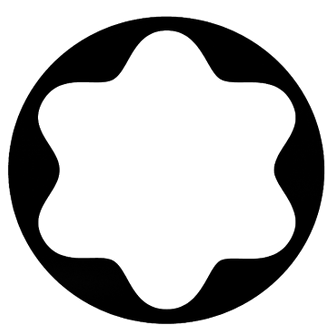

몽블랑 Montblanc
몽블랑은 필기구를 기록의 도구에서 성취와 품격의 상징으로 끌어올린 브랜드다. 만년필은 기능 제품이지만, 브랜드가 축적한 이미지는 서명, 의사결정, 지적 권위 같은 장면과 결합된다.
최종 업데이트

몽블랑은 어떤 브랜드인가
몽블랑은 필기구를 기록의 도구에서 성취와 품격의 상징으로 끌어올린 브랜드다. 만년필은 기능 제품이지만, 브랜드가 축적한 이미지는 서명, 의사결정, 지적 권위 같은 장면과 결합된다.
몽블랑은 어떻게 봐야 할까
몽블랑은 필기구를 기록의 도구에서 성취와 품격의 상징으로 끌어올린 브랜드다. 만년필은 기능 제품이지만, 브랜드가 축적한 이미지는 서명, 의사결정, 지적 권위 같은 장면과 결합된다.
몽블랑은 어떻게 시작되고 성장했나
몽블랑은 만년필에서 시작해 시계, 가죽 제품 등을 생산하는 독일의 럭셔리 브랜드이다. 장인 정신을 담아 뛰어난 품질의 제품을 수작업으로 생산하고, 문화 예술과 함께하는 브랜드 활동을 전개하며 100년이 넘는 역사를 이어오고 있다.
몽블랑의 브랜드 아이덴티티는 무엇인가
몽블랑은 장인 정신을 기반으로, 사용자의 삶에 품격을 더해줄 제품을 생산한다. 몽블랑 제품의 최고급 품질과 클래식한 디자인은 성공과 기품있는 삶의 상징이 되었다.
또한, 문화와 예술 분야에 적극적으로 후원하며 브랜드의 가치를 더하고 있다.
몽블랑의 대표 제품과 서비스는 무엇인가
몽블랑은 장인 정신을 기반으로, 사용자의 삶에 품격을 더해줄 제품을 생산한다. 몽블랑 제품의 최고급 품질과 클래식한 디자인은 성공과 기품있는 삶의 상징이 되었다.
또한, 문화와 예술 분야에 적극적으로 후원하며 브랜드의 가치를 더하고 있다.
몽블랑은 지금 어떤 상태인가
국가: 독일 산업: 럭셔리
몽블랑 연혁 — 주요 사건은 언제였나
몽블랑 로고는 어떻게 변해왔나
대표 로고대표 브랜드 마크 BI/CI 아카이브 2보관 이미지 2
BI/CI 아카이브 2보관 이미지 2
BI/CI 아카이브 3보관 이미지 3자주 묻는 질문
몽블랑는 어떤 산업의 브랜드인가요?
몽블랑는 패션·럭셔리 분야의 브랜드입니다.
몽블랑의 브랜드 아이덴티티는 무엇인가요?
몽블랑은 장인 정신을 기반으로, 사용자의 삶에 품격을 더해줄 제품을 생산한다.
몽블랑의 대표 제품은 무엇인가요?
몽블랑은 장인 정신을 기반으로, 사용자의 삶에 품격을 더해줄 제품을 생산한다.
몽블랑는 현재 어떤 상태인가요?
국가: 독일; 산업: 럭셔리; 필기구; 가죽제품; 시계
출처와 검증
브랜드명은 한글과 원어를 함께 표기하되 데이터에 없는 표기는 만들지 않습니다. 기원 국가·설립연도는 검수된 정의문에서 확인된 값을 우선하고, 없을 때만 공식 웹사이트 URL이 일치하는 위키데이터 개체의 값을 씁니다.